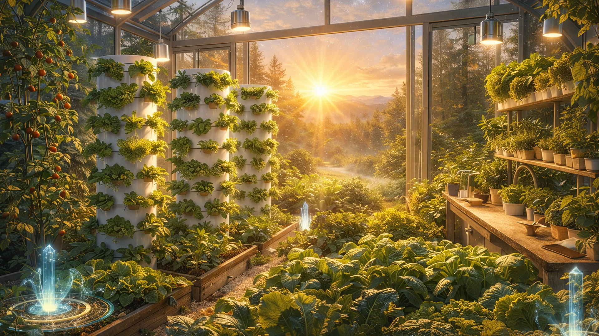
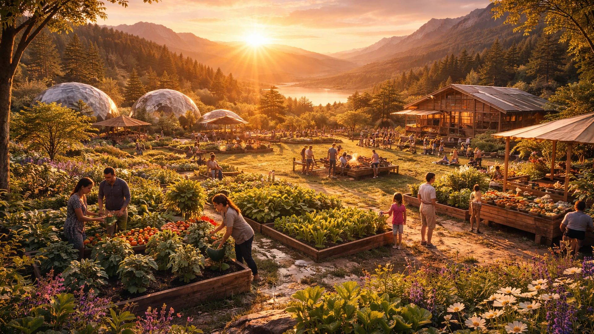

V2 planning baseline approved
Vision, information architecture, and design-system decisions are recorded for the next implementation review.
A living framework for conscious civilization
New Earth brings vision, practical systems, and participation into one place so people can understand what is possible and choose a meaningful next step.
What is New Earth?
New Earth is a public framework for exploring the ideas, relationships, and projects that can support a more conscious civilization. It is a place for clear questions, honest progress, and practical participation.
Start with the big picture
The 12 Pillars
Explore the approved pillar structure in order. Each destination is a place for future, evidence-led page work.
How we make decisions together.
02How value, resources, and exchange relate.
03How learning stays lifelong and alive.
04How wellbeing is understood and supported.
05How nourishment connects people and land.
06How places can support belonging.
07How tools can serve life and agency.
08How harm, repair, and peace are held.
09How knowledge and stories shape culture.
10How human life belongs within living systems.
11How inner and shared life can mature.
12How generations support one another.
Ecosystem
This is a descriptive map of the public information architecture, not a technical architecture diagram.
Featured projects
These representative cards use the approved status language without claiming public readiness.

Exploring practical tools and questions at the intersection of growing and technology.
A project direction requiring further evidence and definition.

A future-facing place for practical learning and participation.
Progress and Transparency
Progress is meaningful when it has context, ownership, and a clear next review.
Vision, information architecture, and design-system decisions are recorded for the next implementation review.
Future milestone placeholder. No completion or performance claim is made here.
Journal and learning
Use the Journal and Resources routes to find future writing, guides, and learning material when they are approved and published.
Get Involved
No account or form is required in this offline phase. Start with understanding, then choose a clear route.
External applications
External platforms can help people participate, but New Earth remains the canonical source. These are safe offline placeholders.
Clearly labelled profile destination placeholder.
Open LinkedIn placeholderNo player, script, feed, or tracker loads in this preview.
Fallback: return to the Journal and Resources routes.
Clearly labelled public destinations, subject to future review.
Return to canonical participation context